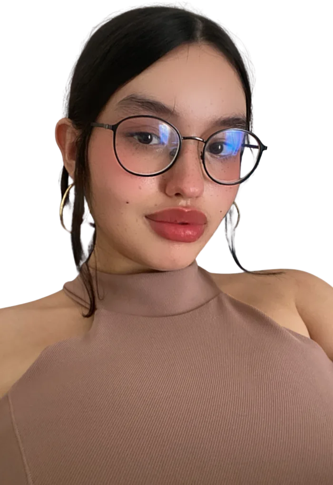

disponível para novos projetos · Goiânia, BR
oi, eu sou a
GabriellaMoreira
Conecto com estratégia e criatividade.

Relações Públicas
Copywriter
Analista de Comunicação
me arrasta!
↻ clica no crachá pra virar
sobre mim
Prazer, Gabi!
caixa de ferramentas:
CanvaCapCutManyChatWordPressPhotoshopGoogle Meu NegócioMeta (Instagram)TikTokLinkedInPinterest
o que eu faço
Minha playlist de habilidades
aperta o play em cada faixa ♪
LADO AGabi.rp
Lado A: Comunicação
o som por trás de cada estratégia
portfólio de projetos
Projetos com propósito
clica num selo pra abrir o projeto
como eu trabalho
Do briefing ao KPI
cinco passos, sempre nessa ordem
experiência & formação
Minha trajetória
rola a página e acompanha o coelhinho
pausa pro café
Caça às ideias
Toda boa campanha começa com uma ideia que aparece do nada e some rápido. Clica nas estrelinhas antes que elas desapareçam. Você tem 15 segundos.
0 ✦15s
Pronta pra caçar ideias?
contato
Bora criar algo junto?
Estou aberta a vagas, freelas e parcerias em comunicação, conteúdo e relações públicas. Me chama!
e-mailgabriellamarmormoreira@gmail.com
telefone / whatsapp+55 (62) 99579-6416
LinkedInin/gabriella-moreira-martins-rp↗
currículo latteslattes.cnpq.br/5849290204365432↗
feito com ✦ e muita estratégia · Gabriella Moreira Martins © 2026
voltar ao topo ↑